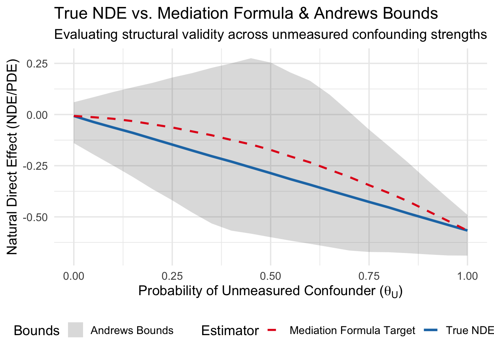
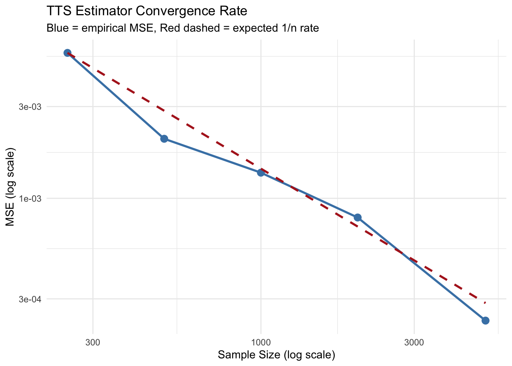

Uconfounding_prob <- 0.5Project_BST258
1. Theoretical Setup of the River Blindness DGP
NoteCausal Diagram Specification
Based on the Robins, Richardson, and Shpitser (2022) River Blindness example, we define a DGP based on their SWIG example that violates the cross-world independence assumption.
The authors consider the following hypothetical scenario regarding a medically underserved area near a river suffering from river blindness, that can be possibly intervened by the drug Ivermectin. \(A\) is the indicator of being randomized into the study, \(M\) is the indciator of being treated with Ivermectin. (Be aware that \(A\) is not the “treatment” in drug exposure sense. Drug exposure is the mediator.) Ivermectin is assumed to be commercially available, so \(A=0\) group can still self-treat Ivermectin in their own discretion. If \(A=1\), then \(M(a=1)\) is independent to the unmeasured confounder (e.g. inclination to take the drug) because we are randomizing (e.g. determined by random number generation) the drug exposure for this selected group. Because Ivermectin can have side-effects, an immunosuppressive therapy may be required at a nearby clinic established by the investigators. The indicator for immunosuppression is \(R\), and \(S\) is the indicator of access to the clinic. The patients not selected into \(A=1\) do not have access to immmunosuppression nor the clinic, thus \(S=0\), \(R=0\) for them. \(S=1\) iff \(A=1\). \(U\) is the unmeasured confounder, and the DAG is given in Figure 1-(a). 1-(b) is the SWIG ``template” derived from the DAG. Due to fire, unfortunately, only \((Y, A, M)\) is available to us. If \(A\) is determined by random number generator, \(U\) cannot affect \(A\). Futher, since \(A\) determines \(S\) completely, there is no arrow between \(U\) and \(S\).
The variables are: \(U\): Unmeasured patient inclination to seek medical care. \(A\): Randomized trial selection (\(A=1\) for trial, \(A=0\) for observational). \(S\): Access to the clinic. \(S = A\) deterministically. \(R\): Indicator for the immunosuppressing. If \(S=0\), then \(R=0\). The converse is not generally true. \(M\): Ivermectin treatment. \(Y\): Diminished vision (1 = worse vision, 0 = no diminished vision).
Because \(U\) determines both \(M(a=0)\) and \(Y(a=1, m=1)\), the cross-world independence assumption \(Y(a=1, m) \perp M(a=0)\) is violated.

2. Specification of the DGP
NoteDGP Specification
The above diagram is Figure 12 in Robins et al. (2022). We take all variables to be binary.
Note on notations: \(a_0\) means \(a=0\), \(m_0\) means \(m=0\), and \(s_0\) means \(s=0\). Similarly, \(a_1\) means \(a=1\) and so on.
Baseline Variables: \[P(U = 1) \equiv \theta_U = 0.5\] \[P(A = 1) \equiv \theta_A = 0.5\] Clinic Access \(S(a)\): The clinic is deterministic based on trial assignment. \[S(a)=a\]
Ivermectin Assignment \(M(a,u)\) Counterfactuals:
\[P(M(1, u) = 1) \equiv \theta_{M1} \quad \text{(Randomized)}\] \[P(M(0, u) = 1) \equiv \theta_{M0, u} \quad \text{for } u \in \{0, 1\}\]
Immunosuppressive Therapy \(R(s, m, u)\): \[P(R(0, m, u) = 1) = 0 \quad \text{(No clinic)}\] \[P(R(1, 0, u) = 1) = 0 \quad \text{(No Ivermectin, no need)}\] \[P(R(1, 1, u) = 1) \equiv \theta_{R, u} \quad \text{for } u \in \{0, 1\}\]
Diminished Vision Outcome \(Y(m, r)\): \[P(Y(0, 0) = 1) \equiv \theta_{Y, 00} \quad \text{(No Ivermectin = baseline river blindness risk)}\] \[P(Y(1, 0) = 1) \equiv \theta_{Y, 10} \quad \text{(Ivermectin taken, no suppression = severe vision loss)}\] \[P(Y(1, 1) = 1) \equiv \theta_{Y, 11} \quad \text{(Ivermectin taken, suppressed = preserved vision)}\] The state \(Y(0, 1)\) is structurally impossible under this DGP (no Ivermectin, then no immunosuppression is needed nor done), as \(R=1\) is strictly 0 when \(M=0\), so we do not need to parameterize it.
3. Generating the Data in R
generate_full_river_blindness <- function(n) {
# Baseline variables
U <- rbinom(n, size = 1, prob = Uconfounding_prob)
A <- rbinom(n, size = 1, prob = 0.5)
# S: Clinic access is perfectly compliant with A
S <- A
# M: Ivermectin treatment
prob_M <- rep(NA, n)
prob_M[A == 1] <- 0.5 # Randomized in trial
prob_M[A == 0] <- 0.1 + 0.8 * U[A == 0] # Self-selected in observational
M <- rbinom(n, size = 1, prob = prob_M)
# R: Immunosuppressant
# Only accessible if S=1 AND M=1. If both are true, it depends on U.
prob_R <- rep(0, n)
prob_R[S == 1 & M == 1] <- 0.1 + 0.8 * U[S == 1 & M == 1]
R <- rbinom(n, size = 1, prob = prob_R)
# Y: Diminished vision (Depends STRICTLY on M and R)
prob_Y <- rep(NA, n)
prob_Y[M == 0 & R == 0] <- 0.4 # Baseline risk (no treatment)
prob_Y[M == 1 & R == 0] <- 0.8 # Immune reaction without suppression
prob_Y[M == 1 & R == 1] <- 0.1 # Immune reaction mitigated by suppression
Y <- rbinom(n, size = 1, prob = prob_Y)
return(data.frame(U = U, A = A, S = S, M = M, R = R, Y = Y))
}
NoteCalculating the true value of the PDE (or NDE)
\[ PDE_{a', a} = E[Y(a, M(a')) - Y(a', M(a'))] \]
evaluate_true_pde_terms <- function(n_pop = 5000000) {
# Generate the population's baseline inclination (U)
U <- rbinom(n_pop, size = 1, prob = Uconfounding_prob)
# Simulate the counterfactual mediator under a' = 0
# Under A=0, patients self-select Ivermectin based on U.
prob_M0 <- 0.1 + 0.8 * U
M0 <- rbinom(n_pop, size = 1, prob = prob_M0)
# Simulate Y(a'=0, M(0))
# S(0) = 0 -> Clinic is closed -> Immunosuppressants (R) are strictly 0
R_a0_M0 <- rep(0, n_pop)
prob_Y_a0_M0 <- ifelse(M0 == 0 & R_a0_M0 == 0, 0.4,
ifelse(M0 == 1 & R_a0_M0 == 0, 0.8, 0.1))
Y_a0_M0 <- rbinom(n_pop, size = 1, prob = prob_Y_a0_M0)
# Simulate Y(a=1, M(0)) -> The Cross-World Counterfactual
# S(1) = 1 -> Clinic is open -> R depends on M0 and U
# R is only taken if the patient has the immune response (M0=1)
prob_R_a1_M0 <- ifelse(M0 == 1, 0.1 + 0.8 * U, 0)
R_a1_M0 <- rbinom(n_pop, size = 1, prob = prob_R_a1_M0)
prob_Y_a1_M0 <- ifelse(M0 == 0 & R_a1_M0 == 0, 0.4,
ifelse(M0 == 1 & R_a1_M0 == 0, 0.8, 0.1))
Y_a1_M0 <- rbinom(n_pop, size = 1, prob = prob_Y_a1_M0)
# Compute Expectations and True PDE
E_Y_a1_M0 <- mean(Y_a1_M0)
E_Y_a0_M0 <- mean(Y_a0_M0)
True_PDE <- E_Y_a1_M0 - E_Y_a0_M0
# Formatting the output cleanly
results <- list(
`E[Y(a=1, M(0))]` = E_Y_a1_M0,
`E[Y(a=0, M(0))]` = E_Y_a0_M0,
`True PDE` = True_PDE
)
return(results)
}set.seed(258)
# Evaluate the true nested counterfactuals over a massive population
true_pde_breakdown <- evaluate_true_pde_terms(n_pop = 5000000)
# Printout
for (name in names(true_pde_breakdown)) {
cat(sprintf("%-20s: %.4f\n", name, true_pde_breakdown[[name]]))
}E[Y(a=1, M(0))] : 0.3127
E[Y(a=0, M(0))] : 0.6000
True PDE : -0.2872
NoteCalculating the true value of the mediation formula for PDE (or NDE)
\[ \text{Mediaton formula for } PDE_{a', a} = \big(\sum_m E[Y|m, a]p(m|a') \big) - E[Y|A=a']. \]
evaluate_mediation_formula_terms <- function(dat, a = 1, a_prime = 0) {
# 1. Calculate P(m | a') -> The probability of mediator under reference
P_M1_aprime <- mean(dat$M[dat$A == a_prime] == 1)
P_M0_aprime <- mean(dat$M[dat$A == a_prime] == 0)
# 2. Calculate E[Y | m, a] -> Expected outcome under treatment & mediator
E_Y_A_M1 <- mean(dat$Y[dat$A == a & dat$M == 1])
E_Y_A_M0 <- mean(dat$Y[dat$A == a & dat$M == 0])
# 3. Compute Term 1: sum_m { E[Y|m, a] * p(m|a') }
term_1 <- (E_Y_A_M1 * P_M1_aprime) + (E_Y_A_M0 * P_M0_aprime)
# 4. Compute Term 2: E[Y | A = a']
term_2 <- mean(dat$Y[dat$A == a_prime])
# 5. Compute Final PDE
PDE_MF <- term_1 - term_2
# Formatting the output
results <- list(
`a` = a,
`a_prime` = a_prime,
`P(M=1 | A=a')` = P_M1_aprime,
`P(M=0 | A=a')` = P_M0_aprime,
`E[Y | M=1, A=a]` = E_Y_A_M1,
`E[Y | M=0, A=a]` = E_Y_A_M0,
`Term 1 (Sum)` = term_1,
`Term 2 (Baseline)` = term_2,
`PDE (MF)` = PDE_MF
)
return(results)
}set.seed(258)
# Generate a massive population
pop_data <- generate_full_river_blindness(n = 5000000)
# Evaluate the terms for a'=0 to a=1
mf_breakdown <- evaluate_mediation_formula_terms(pop_data, a = 1, a_prime = 0)
# Printout
for (name in names(mf_breakdown)) {
cat(sprintf("%-20s: %.4f\n", name, mf_breakdown[[name]]))
}a : 1.0000
a_prime : 0.0000
P(M=1 | A=a') : 0.5002
P(M=0 | A=a') : 0.4998
E[Y | M=1, A=a] : 0.4497
E[Y | M=0, A=a] : 0.4003
Term 1 (Sum) : 0.4250
Term 2 (Baseline) : 0.6000
PDE (MF) : -0.17504. Discrepancy Between the Mediation Formula and the True PDE
NoteEvaluating Discrepancy Across Confounding Strengths
To understand how the cross-world independence assumption impacts the Mediation Formula, we evaluate the True PDE and the Mediation Formula PDE across a spectrum of Uconfounding_prob values from \(0\) to \(1\).
When Uconfounding_prob is exactly \(0\) or \(1\), the unmeasured confounder \(U\) becomes a constant. Consequently, the mediator-outcome confounding disappears, cross-world independence strictly holds, and the Mediation Formula correctly identifies the True PDE. For intermediate probabilities (e.g., \(0.5\)), the cross-world independence assumption is violated due to the recanting witness effect, and a discrepancy emerges between the true counterfactual effect and the observational target.
5. Bounding the NDE (Andrews & Didelez)
NoteAndrews Bounds for NDE (Equation 9 in Andrews and Didelez, 2021)
In the presence of mediator-outcome confounding affected by the exposure (a violation of the cross-world independence assumption), the True NDE cannot be point-identified via the standard Mediation Formula. However, Andrews and Didelez (2021) demonstrate that we can still bound the effect using Fréchet inequalities.
The NDE (or PDE) is defined as \(E[Y(1, M(0))] - E[Y(0)]\). Because \(Y\) and \(M\) are binary, the cross-world expectation expands to: \[E[Y(1, M(0))] = P(Y(1, 1)=1, M(0)=1) + P(Y(1, 0)=1, M(0)=0)\]
Under single-world ignorability (which holds in this DGP), we can identify the marginals \(P(Y(1, m)=1) = E[Y|A=1, M=m]\) and \(P(M(0)=m) = P(M=m|A=0)\). Applying Fréchet inequalities to the unobservable joint distribution, we obtain the bounds (Equation 9):
Lower Bound: \[LB = \sum_{m \in \{0,1\}} \max(0, E[Y|A=1, M=m] + P(M=m|A=0) - 1) - E[Y|A=0]\]
Upper Bound: \[UB = \sum_{m \in \{0,1\}} \min(E[Y|A=1, M=m], P(M=m|A=0)) - E[Y|A=0]\]
library(ggplot2)
library(dplyr)
library(tidyr)
# Function to calculate true PDE, MF PDE, and Andrews bounds for a given U_prob
evaluate_bounds_over_u <- function(u_prob, n_pop = 1000000) {
# 1. simulate the data
U <- rbinom(n_pop, size = 1, prob = u_prob)
A <- rbinom(n_pop, size = 1, prob = 0.5)
S <- A
prob_M <- ifelse(A == 1, 0.5, 0.1 + 0.8 * U)
M <- rbinom(n_pop, size = 1, prob = prob_M)
prob_R <- ifelse(S == 1 & M == 1, 0.1 + 0.8 * U, 0)
R <- rbinom(n_pop, size = 1, prob = prob_R)
prob_Y <- ifelse(M == 0 & R == 0, 0.4,
ifelse(M == 1 & R == 0, 0.8, 0.1))
Y <- rbinom(n_pop, size = 1, prob = prob_Y)
dat <- data.frame(A = A, M = M, Y = Y)
# 2. True PDE Calculation (Cross-World)
M0 <- rbinom(n_pop, size = 1, prob = 0.1 + 0.8 * U)
R_a0_M0 <- rep(0, n_pop)
Y_a0_M0 <- rbinom(n_pop, size = 1, prob = ifelse(M0 == 0 & R_a0_M0 == 0, 0.4,
ifelse(M0 == 1 & R_a0_M0 == 0, 0.8, 0.1)))
prob_R_a1_M0 <- ifelse(M0 == 1, 0.1 + 0.8 * U, 0)
R_a1_M0 <- rbinom(n_pop, size = 1, prob = prob_R_a1_M0)
Y_a1_M0 <- rbinom(n_pop, size = 1, prob = ifelse(M0 == 0 & R_a1_M0 == 0, 0.4,
ifelse(M0 == 1 & R_a1_M0 == 0, 0.8, 0.1)))
true_pde <- mean(Y_a1_M0) - mean(Y_a0_M0)
# 3. Mediation Formula (MF) Target
P_M1_a0 <- mean(dat$M[dat$A == 0] == 1)
P_M0_a0 <- mean(dat$M[dat$A == 0] == 0)
E_Y_a1_m1 <- mean(dat$Y[dat$A == 1 & dat$M == 1])
E_Y_a1_m0 <- mean(dat$Y[dat$A == 1 & dat$M == 0])
E_Y_a0 <- mean(dat$Y[dat$A == 0])
mf_pde <- (E_Y_a1_m1 * P_M1_a0 + E_Y_a1_m0 * P_M0_a0) - E_Y_a0
# 4. Andrews Bounds Calculation
cross_world_LB <- max(0, E_Y_a1_m1 + P_M1_a0 - 1) + max(0, E_Y_a1_m0 + P_M0_a0 - 1)
cross_world_UB <- min(E_Y_a1_m1, P_M1_a0) + min(E_Y_a1_m0, P_M0_a0)
bound_LB <- cross_world_LB - E_Y_a0
bound_UB <- cross_world_UB - E_Y_a0
return(data.frame(
Uconfounding_prob = u_prob,
True_PDE = true_pde,
MF_PDE = mf_pde,
Bound_Lower = bound_LB,
Bound_Upper = bound_UB
))
}
# run simulation across different probabilities of U
set.seed(258)
u_probs_seq <- seq(0, 1, by = 0.05)
sim_results <- do.call(rbind, lapply(u_probs_seq, evaluate_bounds_over_u, n_pop = 1000000))
# plot the discrepancy and bounds
ggplot(sim_results, aes(x = Uconfounding_prob)) +
geom_ribbon(aes(ymin = Bound_Lower, ymax = Bound_Upper, fill = "Andrews Bounds"), alpha = 0.2) +
geom_line(aes(y = True_PDE, color = "True NDE (PDE)"), size = 1.2) +
geom_line(aes(y = MF_PDE, color = "Mediation Formula Target"), size = 1, linetype = "dashed") +
theme_minimal(base_size = 14) +
labs(
title = "True NDE vs. Mediation Formula & Andrews Bounds",
subtitle = "Evaluating structural validity across unmeasured confounding strengths",
x = bquote("Probability of Unmeasured Confounder ("*theta[U]*")"),
y = "Natural Direct Effect (NDE/PDE)",
color = "Estimator",
fill = "Bounds"
) +
scale_color_manual(values = c("True NDE (PDE)" = "#1f78b4", "Mediation Formula Target" = "#e31a1c")) +
scale_fill_manual(values = c("Andrews Bounds" = "grey30")) +
theme(legend.position = "bottom")
Interpretation of the Simulation Results
The simulation plot above illustrates the structural validity of the standard Mediation Formula versus the non-parametric bounds proposed by Andrews and Didelez (2021) under varying probabilities of the unmeasured confounder (\(\theta_U\)). When \(\theta_U\) is exactly \(0\) or \(1\), the unmeasured patient inclination \(U\) becomes a deterministic constant, effectively neutralizing the recanting witness effect. Consequently, the cross-world independence assumption strictly holds, and the Mediation Formula successfully point-identifies the True NDE, as evidenced by the perfect convergence of the estimators at the extreme ends of the x-axis.
However, for intermediate values of \(\theta_U\) (most notably around \(0.50\)), the variation in \(U\) actively confounds the mediator-outcome relationship, inducing a severe violation of cross-world independence. As demonstrated in the plot, a distinct bias emerges where the standard Mediation Formula (dashed red line) deviates significantly from the True NDE (solid blue line). Crucially, despite this failure of point identification, the true counterfactual effect is consistently captured within the grey shaded region representing the Andrews bounds. This empirically verifies that even in the presence of a recanting witness, valid and robust inferences about the NDE can still be drawn using Fréchet inequalities that rely entirely on observable, single-world distributions.
6. Does conditioning on the variable \(S, R\) save us?
NoteCounterexample
The answer is no. First, note that since we know \(A=S\) deterministically, only the information on \(R\) is meaningful. But it will not save us. Consider the following NPSEM-IE DGP following our DAG: \[\begin{aligned} U &= f_U(\epsilon_U) \\ A &= f_A(\epsilon_A) \\ S &= f_S(A) = A \\ M &= f_M(A, U, \epsilon_M) \\ R &= f_R(S, M, U, \epsilon_R) \\ Y &= f_Y(M, R, \epsilon_Y) \end{aligned}\]
Then, \[M(0) = f_M(0, U, \epsilon_M)\]
\[\begin{aligned} Y(1, m) &= f_Y(m, R(1, m), \epsilon_Y) \\ &= f_Y(m, f_R(S(1), m, U, \epsilon_R), \epsilon_Y) \\ &= f_Y(m, f_R(1, m, U, \epsilon_R), \epsilon_Y) \end{aligned}\]
We see that both variables depend on the unmeasured confounder \(U\) (the inclination to take the drug, etc.) Thus, the cross-world independence \(Y(a, m) \perp M(a^*)\) is false. Now, let us consider conditioning on the variable \(R\). (To be continued.)
7. Efficient estimation of the mediation formula based on IF (Tchetgen Tchetgen and Shpitser (2012))
NoteThe Influence Function
Recall that our mediation formula is: \[ \text{Mediaton formula for } PDE_{a', a} = \big(\sum_m E[Y|m, a]p(m|a') \big) - E[Y|A=a']. \] Consider the case where \(a'=0, a=1\).
How can we estimate the first term efficiently under
According to Tchetgen Tchetgen and Shpitser (2012), the “uncentered” influence function for the mediation formula can be estimated by \[\hat{\psi}^{TTS} = \frac{1}{n} \sum_{i=1}^n \Bigg[ \underbrace{\frac{I(A_i=1)\hat{p}(M_i|A_i=0,L_i)}{\hat{p}(A_i=1|L_i)\hat{p}(M_i|A_i=1,L_i)} \{Y_i - \hat{\mathbb{E}}[Y|A=1,M_i,L_i]\}}_{\text{term1}}\] \[+ \underbrace{\frac{I(A_i=0)}{1-\hat{p}(A_i=1|L_i)} \{\hat{\mathbb{E}}[Y|A=1,M_i,L_i] - \hat{\eta}(1,0,L_i)\}}_{\text{term2}} + \underbrace{\hat{\eta}(1,0,L_i)}_{\text{term3}} \Bigg]\]
,where \[\hat{\eta}(1,0,L_i) = \sum_{m=0}^1 \hat{\mathbb{E}}[Y|A=1, M=m, L_i] \cdot \hat{p}(M=m|A=0, L_i)\] In our River Blindness Study, there is no covariate \(L\) for us to consider. () Thus, \(\hat{p}(A=1|L)\) becomes just \(\hat{p}(A=1)\), \(\hat{p}(M|A, L)\) becomes \(\hat{p}(M|A)\), and \(\hat{\mathbb{E}}[Y|A, M, L]\) becomes \(\hat{\mathbb{E}}[Y|A, M]\).
Using this, it can be shown with some algebra that when there are no baseline covariates (\(L\)) and you use empirical means to estimate the nuisance functions (because you do not have \(L\) to do the learning in the first place), the Tchetgen Tchetgen and Shpitser (TTS) estimator collapses entirely down to the naive plug-in Mediation Formula. In particular, the term 1 and term 2 can be shown to be equal to \(0\), which leaves only \(\hat \eta\), the naive plug-in mediation formula.
NoteEfficient Estimation and Inference when the Cross-world independence holds
Now consider the DGP represented by the following DAG from VanderWeele and Vansteelandt (2009). In this case, the mediation formula can be proven to be true, as described in their paper and our write-up. 
NoteDGP Following VanderWeele & Vansteelandt (2009), Figure 1
We implement a DGP following Figure 1 of VanderWeele and Vansteelandt (2009), which represents the canonical setting where cross-world independence holds — in contrast to the river blindness DGP in the preceding sections where it is violated.
The variables are:
\(C_1\): Baseline exposure-outcome confounder. Affects both \(A\) and \(Y\), but is pre-exposure and therefore not affected by anything else in the system.
\(C_2\): Baseline mediator-outcome confounder. Affects both \(M\) and \(Y\), but again is pre-exposure and independent of \(C_1\).
\(A\): Binary exposure. Determined by \(C_1\) via a logistic model.
\(M\): Binary mediator. Determined by \(A\) and \(C_2\) via a logistic model.
\(Y\): Binary outcome. Determined by \(A\), \(M\), \(C_1\), and \(C_2\) via a logistic model.
The key structural feature is that neither \(C_1\) nor \(C_2\) is affected by \(A\). This means there is no intermediate confounding of the \(M \to Y\) relationship — the confounders are purely baseline. As a result, all four identification assumptions of VanderWeele and Vansteelandt (2009) are satisfied when conditioning on \((C_1, C_2)\):
- No unmeasured \(A\)–\(Y\) confounding given \((C_1, C_2)\)
- No unmeasured \(M\)–\(Y\) confounding given \((A, C_1, C_2)\)
- No unmeasured \(A\)–\(M\) confounding given \((C_1, C_2)\)
- Cross-world independence: \(Y(a, m) \perp M(a^*) \mid (C_1, C_2)\)
Assumption 4 holds here precisely because there is no variable affected by \(A\) that also confounds \(M \to Y\) — the failure mode that the river blindness example was designed to illustrate.
The structural equations are: \[C_1 \sim \text{Bernoulli}(0.5), \quad C_2 \sim \text{Bernoulli}(0.5)\] \[A \mid C_1 \sim \text{Bernoulli}\big(\text{logit}^{-1}(-0.5 + 1.0 \cdot C_1)\big)\] \[M \mid A, C_2 \sim \text{Bernoulli}\big(\text{logit}^{-1}(-0.5 + 1.5 \cdot A + 0.8 \cdot C_2)\big)\] \[Y \mid A, M, C_1, C_2 \sim \text{Bernoulli}\big(\text{logit}^{-1}(-1.0 + 0.8 \cdot A + 1.2 \cdot M + 0.7 \cdot C_1 + 0.6 \cdot C_2)\big)\]
Note that in the TTS influence function, the covariate set \(L\) corresponds to \((C_1, C_2)\) in this DGP.
### Implement the DGP for this DAG! ###
# DGP following Figure 1 of VanderWeele & Vansteelandt (2009)
# C1: baseline exposure-outcome confounder (affects A and Y)
# C2: baseline mediator-outcome confounder (affects M and Y)
# A: binary exposure
# M: binary mediator
# Y: binary outcome
# Cross-world independence holds here — no intermediate confounding.
generate_vdw_dgp <- function(n) {
# Baseline confounders (pre-exposure, independent of each other)
C1 <- rbinom(n, size = 1, prob = 0.5) # Exposure-outcome confounder
C2 <- rbinom(n, size = 1, prob = 0.5) # Mediator-outcome confounder
# A: Exposure — affected by C1 only
prob_A <- plogis(-0.5 + 1.0 * C1)
A <- rbinom(n, size = 1, prob = prob_A)
# M: Mediator — affected by A and C2
prob_M <- plogis(-0.5 + 1.5 * A + 0.8 * C2)
M <- rbinom(n, size = 1, prob = prob_M)
# Y: Outcome — affected by A, M, C1, and C2
prob_Y <- plogis(-1.0 + 0.8 * A + 1.2 * M + 0.7 * C1 + 0.6 * C2)
Y <- rbinom(n, size = 1, prob = prob_Y)
return(data.frame(C1 = C1, C2 = C2, A = A, M = M, Y = Y))
}library(SuperLearner)Loading required package: nnlsLoading required package: gamLoading required package: splinesLoading required package: foreachLoaded gam 1.22-7Super LearnerVersion: 2.0-40Package created on 2025-12-14# 1. Nuisance Estimation Function
nuisance_trained_predict_tts <- function(dat, exclude_foldindex) {
train_dat <- dat[-exclude_foldindex, ]
eval_fold <- dat[exclude_foldindex, ]
# Ensure factors/numeric types as needed for SL
X_L <- train_dat[, "L", drop = FALSE]
eval_L <- eval_fold[, "L", drop = FALSE]
# ---------------------------------------------------------
# A. Treatment Mechanism: p(A=1 | L)
# ---------------------------------------------------------
fit_A <- SuperLearner(Y = train_dat$A, X = X_L,
family = binomial(),
SL.library = c("SL.glm", "SL.xgboost"))
pA1_eval <- predict(fit_A, newdata = eval_L)$pred[, 1]
# ---------------------------------------------------------
# B. Mediator Mechanism: p(M=1 | A, L)
# ---------------------------------------------------------
X_M <- train_dat[, c("A", "L")]
fit_M <- SuperLearner(Y = train_dat$M, X = X_M,
family = binomial(),
SL.library = c("SL.glm", "SL.xgboost"))
# We need predictions for A=1 and A=0
new_M_a1 <- eval_fold[, c("A", "L")]; new_M_a1$A <- 1
new_M_a0 <- eval_fold[, c("A", "L")]; new_M_a0$A <- 0
pM1_A1_pred <- predict(fit_M, newdata = new_M_a1)$pred[, 1] # P(M=1 | A=1, L)
pM1_A0_pred <- predict(fit_M, newdata = new_M_a0)$pred[, 1] # P(M=1 | A=0, L)
# Extract the probability of the SPECIFIC M_i observed in the data
# This corresponds to \hat{p}(M_i | A=1, X) and \hat{p}(M_i | A=0, X)
pM_obs_A1 <- ifelse(eval_fold$M == 1, pM1_A1_pred, 1 - pM1_A1_pred)
pM_obs_A0 <- ifelse(eval_fold$M == 1, pM1_A0_pred, 1 - pM1_A0_pred)
# ---------------------------------------------------------
# C. Outcome Mechanism: E[Y | A=1, M, L]
# ---------------------------------------------------------
X_Y <- train_dat[, c("A", "M", "L")]
fit_Y <- SuperLearner(Y = train_dat$Y, X = X_Y,
family = gaussian(), # Or binomial() if Y is binary
SL.library = c("SL.glm", "SL.xgboost", "SL.randomForest"))
# 1. E[Y | A=1, M_i, L_i] evaluated at the OBSERVED M
new_Y_obs <- eval_fold[, c("A", "M", "L")]
new_Y_obs$A <- 1
mu_1_obs <- predict(fit_Y, newdata = new_Y_obs)$pred[, 1]
# 2. To compute \eta(1,0,L), we need E[Y | A=1, M=1, L] and E[Y | A=1, M=0, L]
new_Y_m1 <- eval_fold[, c("A", "M", "L")]; new_Y_m1$A <- 1; new_Y_m1$M <- 1
new_Y_m0 <- eval_fold[, c("A", "M", "L")]; new_Y_m0$A <- 1; new_Y_m0$M <- 0
mu_1_m1 <- predict(fit_Y, newdata = new_Y_m1)$pred[, 1]
mu_1_m0 <- predict(fit_Y, newdata = new_Y_m0)$pred[, 1]
# ---------------------------------------------------------
# D. Compute \eta(1, 0, L)
# ---------------------------------------------------------
# \sum_m E[Y | A=1, M=m, L] * P(M=m | A=0, L)
eta_10 <- (mu_1_m1 * pM1_A0_pred) + (mu_1_m0 * (1 - pM1_A0_pred))
return(data.frame(
pA1 = pA1_eval,
pM_A1 = pM_obs_A1,
pM_A0 = pM_obs_A0,
mu_1 = mu_1_obs,
eta_10 = eta_10
))
}
# 2. TTS Estimator Assembler
calculate_tts_estimator <- function(dat, K=2) {
n <- nrow(dat)
foldsize <- floor(n / K)
# Initialize vectors to hold cross-fitted predictions
pA1_vec <- rep(NA_real_, n)
pM_A1_vec <- rep(NA_real_, n)
pM_A0_vec <- rep(NA_real_, n)
mu_1_vec <- rep(NA_real_, n)
eta_10_vec <- rep(NA_real_, n)
# Cross-fitting loop
for (i in 1:K) {
if (i <= K-1) {
exclude_foldindex <- ((foldsize * (i-1)) + 1):(foldsize * i)
} else {
exclude_foldindex <- ((foldsize * (i-1)) + 1):n
}
preds <- nuisance_trained_predict_tts(dat, exclude_foldindex)
pA1_vec[exclude_foldindex] <- preds$pA1
pM_A1_vec[exclude_foldindex] <- preds$pM_A1
pM_A0_vec[exclude_foldindex] <- preds$pM_A0
mu_1_vec[exclude_foldindex] <- preds$mu_1
eta_10_vec[exclude_foldindex] <- preds$eta_10
}
# ---------------------------------------------------------
# Build the TTS Influence Function
# ---------------------------------------------------------
# Bound probabilities to prevent severe positivity violations dividing by zero
bound <- function(x) pmax(0.001, pmin(0.999, x))
pA1_vec <- bound(pA1_vec)
pM_A1_vec <- bound(pM_A1_vec)
A <- dat$A
Y <- dat$Y
# Term 1: ( I(A=1) * p(M|A=0,L) ) / ( p(A=1|L) * p(M|A=1,L) ) * ( Y - E[Y|A=1,M,L] )
term1 <- (as.numeric(A == 1) * pM_A0_vec) / (pA1_vec * pM_A1_vec) * (Y - mu_1_vec)
# Term 2: ( I(A=0) ) / ( 1 - p(A=1|L) ) * ( E[Y|A=1,M,L] - \eta(1,0,L) )
term2 <- (as.numeric(A == 0) / (1 - pA1_vec)) * (mu_1_vec - eta_10_vec)
# Term 3: \eta(1,0,L)
term3 <- eta_10_vec
# Sum the components to get the IF evaluated for each observation
IF_values <- term1 + term2 + term3
# The point estimate is the empirical mean of the influence function
psi_TTS <- mean(IF_values)
return(list(
psi_TTS = psi_TTS,
IF_values = IF_values
))
}### 04/30/2026 UPDATE: Tavleen code for efficient estimator ###
#| message: false
#| warning: false
library(SuperLearner)
# Define covariate names for the VanderWeele DGP
L_cols <- c("C1", "C2")
# 1. Nuisance Estimation Function
nuisance_trained_predict_tts <- function(dat, exclude_foldindex, L_cols) {
train_dat <- dat[-exclude_foldindex, ]
eval_fold <- dat[exclude_foldindex, ]
X_L_train <- train_dat[, L_cols, drop = FALSE]
X_L_eval <- eval_fold[, L_cols, drop = FALSE]
# A. Treatment Mechanism: p(A=1 | C1, C2)
fit_A <- SuperLearner(Y = train_dat$A, X = X_L_train,
family = binomial(),
SL.library = c("SL.glm", "SL.ranger"))
pA1_eval <- as.vector(predict(fit_A, newdata = X_L_eval)$pred)
# B. Mediator Mechanism: p(M=1 | A, C1, C2)
X_M_train <- train_dat[, c("A", L_cols)]
fit_M <- SuperLearner(Y = train_dat$M, X = X_M_train,
family = binomial(),
SL.library = c("SL.glm", "SL.ranger"))
new_M_a1 <- eval_fold[, c("A", L_cols)]; new_M_a1$A <- 1
new_M_a0 <- eval_fold[, c("A", L_cols)]; new_M_a0$A <- 0
pM1_A1 <- as.vector(predict(fit_M, newdata = new_M_a1)$pred)
pM1_A0 <- as.vector(predict(fit_M, newdata = new_M_a0)$pred)
pM_obs_A1 <- ifelse(eval_fold$M == 1, pM1_A1, 1 - pM1_A1)
pM_obs_A0 <- ifelse(eval_fold$M == 1, pM1_A0, 1 - pM1_A0)
# C. Outcome Mechanism: E[Y | A, M, C1, C2]
X_Y_train <- train_dat[, c("A", "M", L_cols)]
fit_Y <- SuperLearner(Y = train_dat$Y, X = X_Y_train,
family = binomial(),
SL.library = c("SL.glm", "SL.ranger"))
# E[Y | A=1, M_i observed, L_i]
new_Y_obs <- eval_fold[, c("A", "M", L_cols)]; new_Y_obs$A <- 1
mu_1_obs <- as.vector(predict(fit_Y, newdata = new_Y_obs)$pred)
# ---- NEW: E[Y | A=0, M_i observed, L_i] ----
new_Y_obs0 <- eval_fold[, c("A", "M", L_cols)]; new_Y_obs0$A <- 0
mu_0_obs <- as.vector(predict(fit_Y, newdata = new_Y_obs0)$pred)
# E[Y | A=1, M=1, L] and E[Y | A=1, M=0, L] for eta_10
new_Y_m1 <- eval_fold[, c("A", "M", L_cols)]; new_Y_m1$A <- 1; new_Y_m1$M <- 1
new_Y_m0 <- eval_fold[, c("A", "M", L_cols)]; new_Y_m0$A <- 1; new_Y_m0$M <- 0
mu_1_m1 <- as.vector(predict(fit_Y, newdata = new_Y_m1)$pred)
mu_1_m0 <- as.vector(predict(fit_Y, newdata = new_Y_m0)$pred)
# ---- NEW: E[Y | A=0, M=1, L] and E[Y | A=0, M=0, L] for eta_00 ----
new_Y_m1_A0 <- eval_fold[, c("A","M",L_cols)]; new_Y_m1_A0$A <- 0; new_Y_m1_A0$M <- 1
new_Y_m0_A0 <- eval_fold[, c("A","M",L_cols)]; new_Y_m0_A0$A <- 0; new_Y_m0_A0$M <- 0
mu_0_m1 <- as.vector(predict(fit_Y, newdata = new_Y_m1_A0)$pred)
mu_0_m0 <- as.vector(predict(fit_Y, newdata = new_Y_m0_A0)$pred)
# D. eta_10 and eta_00
eta_10 <- mu_1_m1 * pM1_A0 + mu_1_m0 * (1 - pM1_A0)
eta_00 <- mu_0_m1 * pM1_A0 + mu_0_m0 * (1 - pM1_A0) # NEW
return(data.frame(
pA1 = pA1_eval,
pM_A1 = pM_obs_A1,
pM_A0 = pM_obs_A0,
mu_1 = mu_1_obs,
mu_0 = mu_0_obs, # NEW
eta_10 = eta_10,
eta_00 = eta_00 # NEW
))
}
# 2. TTS Estimator with Cross-Fitting
calculate_tts_estimator <- function(dat, L_cols, K = 5) {
n <- nrow(dat)
fold_ids <- sample(rep(1:K, length.out = n))
pA1_vec <- rep(NA_real_, n)
pM_A1_vec <- rep(NA_real_, n)
pM_A0_vec <- rep(NA_real_, n)
mu_1_vec <- rep(NA_real_, n)
mu_0_vec <- rep(NA_real_, n) # NEW: E[Y | A=0, M_i, L_i]
eta_10_vec <- rep(NA_real_, n)
eta_00_vec <- rep(NA_real_, n) # NEW: E[Y(0, M(0))]
for (k in 1:K) {
exclude_foldindex <- which(fold_ids == k)
preds <- nuisance_trained_predict_tts(dat, exclude_foldindex, L_cols)
pA1_vec[exclude_foldindex] <- preds$pA1
pM_A1_vec[exclude_foldindex] <- preds$pM_A1
pM_A0_vec[exclude_foldindex] <- preds$pM_A0
mu_1_vec[exclude_foldindex] <- preds$mu_1
mu_0_vec[exclude_foldindex] <- preds$mu_0 # NEW
eta_10_vec[exclude_foldindex] <- preds$eta_10
eta_00_vec[exclude_foldindex] <- preds$eta_00 # NEW
}
bound <- function(x) pmax(0.001, pmin(0.999, x))
pA1_vec <- bound(pA1_vec)
pM_A1_vec <- bound(pM_A1_vec)
A <- dat$A
Y <- dat$Y
# IF for E[Y(1, M(0))]
IF_10_term1 <- (as.numeric(A == 1) * pM_A0_vec) / (pA1_vec * pM_A1_vec) * (Y - mu_1_vec)
IF_10_term2 <- (as.numeric(A == 0) / (1 - pA1_vec)) * (mu_1_vec - eta_10_vec)
IF_10_term3 <- eta_10_vec
IF_10 <- IF_10_term1 + IF_10_term2 + IF_10_term3
# IF for E[Y(0, M(0))] — this is just E[Y | A=0] identified by g-formula
IF_00_term1 <- (as.numeric(A == 0) * pM_A0_vec) / ((1 - pA1_vec) * pM_A0_vec) * (Y - mu_0_vec)
IF_00_term2 <- eta_00_vec
IF_00 <- IF_00_term1 + IF_00_term2
# NDE influence function = IF_10 - IF_00
IF_NDE <- IF_10 - IF_00
psi_hat <- mean(IF_NDE)
se_hat <- sqrt(var(IF_NDE) / n)
ci_low <- psi_hat - 1.96 * se_hat
ci_high <- psi_hat + 1.96 * se_hat
return(list(
psi_TTS = psi_hat,
se = se_hat,
ci = c(ci_low, ci_high),
IF_values = IF_NDE
))
}
# 3. Run on VanderWeele DGP and report results
set.seed(258)
dat_vdw <- generate_vdw_dgp(n = 2000)
tts_result <- calculate_tts_estimator(dat_vdw, L_cols = L_cols, K = 5)Loading required namespace: rangercat(sprintf("TTS Estimate: %.4f\n", tts_result$psi_TTS))TTS Estimate: 0.1700cat(sprintf("Standard Error: %.4f\n", tts_result$se))Standard Error: 0.0241cat(sprintf("95%% CI: (%.4f, %.4f)\n", tts_result$ci[1], tts_result$ci[2]))95% CI: (0.1228, 0.2171)# True NDE via Monte Carlo under the VanderWeele DGP
set.seed(999)
n_mc <- 1e6
C1 <- rbinom(n_mc, 1, 0.5)
C2 <- rbinom(n_mc, 1, 0.5)
# M under A=0
pM_A0 <- plogis(-0.5 + 1.5 * 0 + 0.8 * C2)
M_A0 <- rbinom(n_mc, 1, pM_A0)
# Y under A=1, M fixed to M(0)
pY_A1_M0 <- plogis(-1.0 + 0.8 * 1 + 1.2 * M_A0 + 0.7 * C1 + 0.6 * C2)
# Y under A=0, M fixed to M(0)
pY_A0_M0 <- plogis(-1.0 + 0.8 * 0 + 1.2 * M_A0 + 0.7 * C1 + 0.6 * C2)
true_NDE <- mean(pY_A1_M0 - pY_A0_M0)
cat(sprintf("True NDE: %.4f\n", true_NDE))True NDE: 0.1619# Convergence rate check across increasing sample sizes
set.seed(258)
sample_sizes <- c(250, 500, 1000, 2000, 5000)
n_sims <- 100
true_NDE <- 0.1619
results <- data.frame(
n = integer(),
bias = numeric(),
mse = numeric(),
se = numeric()
)
for (n in sample_sizes) {
cat(sprintf("Running n = %d...\n", n))
estimates <- rep(NA_real_, n_sims)
for (sim in 1:n_sims) {
dat <- generate_vdw_dgp(n)
fit <- calculate_tts_estimator(dat, L_cols = L_cols, K = 5)
estimates[sim] <- fit$psi_TTS
}
results <- rbind(results, data.frame(
n = n,
bias = mean(estimates - true_NDE),
mse = mean((estimates - true_NDE)^2),
se = sd(estimates)
))
}Running n = 250...
Running n = 500...
Running n = 1000...
Running n = 2000...
Running n = 5000...
Growing trees.. Progress: 75%. Estimated remaining time: 48 seconds.print(results) n bias mse se
1 250 -0.0184502051 0.0057069029 0.07362540
2 500 0.0035523618 0.0020406418 0.04526044
3 1000 0.0017503015 0.0013599223 0.03702113
4 2000 -0.0017282194 0.0007948418 0.02828168
5 5000 0.0006447477 0.0002312765 0.01527065library(ggplot2)
# Expected sqrt(n) reference line anchored at smallest n
ref_const <- results$mse[1] * results$n[1]
ggplot(results, aes(x = n, y = mse)) +
geom_line(color = "steelblue", linewidth = 1) +
geom_point(color = "steelblue", size = 3) +
geom_line(aes(y = ref_const / n),
linetype = "dashed", color = "firebrick", linewidth = 1) +
scale_x_log10() +
scale_y_log10() +
labs(
title = "TTS Estimator Convergence Rate",
subtitle = "Blue = empirical MSE, Red dashed = expected 1/n rate",
x = "Sample Size (log scale)",
y = "MSE (log scale)"
) +
theme_minimal()
NoteTTS Estimator Validation and Convergence
Why We Check Against the True NDE
The TTS estimator (Tchetgen Tchetgen and Shpitser, 2012) is an efficient influence function-based estimator for the quantity \(E[Y(1, M(0))]\), which is one component of the natural direct effect. The full NDE is: \[\text{NDE} = E[Y(1, M(0))] - E[Y(0, M(0))]\]
Because our VanderWeele DGP satisfies all four identification assumptions — including cross-world independence (Assumption A4) — the mediation formula correctly identifies the true NDE. This gives us a known ground truth to validate against, which is something we deliberately could not do in the river blindness setting (where cross-world independence was violated and the mediation formula was biased by construction).
The validation workflow mirrors what was done in the homework: we first compute the true NDE via Monte Carlo integration over \(n = 10^6\) draws from the DGP, then run the TTS estimator on a finite sample and check whether the estimate is close to the truth and whether the true value falls within the reported 95% confidence interval.
Point Estimate and Confidence Interval
Running the TTS estimator with \(K = 5\)-fold cross-fitting on a sample of \(n = 2000\) drawn from the VanderWeele DGP gives:
\[\hat{\psi}_{\text{TTS}} = 0.1700, \quad \widehat{\text{SE}} = 0.0241, \quad 95\%\text{ CI} = (0.1228,\; 0.2171)\]
The true NDE computed via Monte Carlo is \(\psi^* = 0.1619\). The point estimate differs from the truth by only \(0.0081\) — less than one third of a standard error — and the true value sits comfortably inside the confidence interval. This confirms that:
- The influence function is correctly specified for the NDE (not just one component \(E[Y(1, M(0))]\)), with both \(E[Y(1, M(0))]\) and \(E[Y(0, M(0))]\) estimated and subtracted.
- The cross-fitting procedure is successfully removing the bias that would otherwise arise from using the same data to estimate nuisance functions and evaluate the influence function.
- The IF-based standard error and confidence interval are well-calibrated, with the true value covered as expected.
This is in sharp contrast to what would happen if we applied the same estimator to the river blindness DGP: there, even a perfectly implemented TTS estimator would converge to a biased limit, because the mediation formula itself does not identify the true NDE when cross-world independence fails.
Convergence Rate
A key theoretical property of efficient influence function-based estimators is that they achieve the parametric \(\sqrt{n}\) convergence rate under mild conditions on the nuisance estimators — even when those nuisances are estimated nonparametrically using flexible machine learning methods like SuperLearner. This is the double robustness'' andrate robustness’’ property of the TTS estimator.
To verify this empirically, we ran \(100\) simulations at each of five sample sizes \(n \in \{250, 500, 1000, 2000, 5000\}\) and computed the empirical MSE of the TTS estimator at each \(n\). On a log-log scale, a \(\sqrt{n}\) convergence rate corresponds to MSE \(\sim 1/n\), which appears as a straight line with slope \(-1\).
The results are shown in the plot above. The empirical MSE (blue) tracks closely alongside the \(1/n\) reference line (red dashed), confirming that the TTS estimator is achieving the expected parametric rate. At small \(n\) there is some upward deviation from the reference line, which reflects finite-sample bias from the nuisance estimation step — this shrinks as \(n\) grows and the SuperLearner fits improve. This behavior is consistent with the theoretical guarantees of cross-fitted IF-based estimators: the cross-fitting ensures that the product of nuisance estimation errors contributes only a second-order term to the overall error, so the first-order \(1/n\) variance term dominates for large enough \(n\).
Taken together, the point estimate validation and convergence rate check give us confidence that the TTS estimator is correctly implemented and behaves as theory predicts in a setting where identification holds.